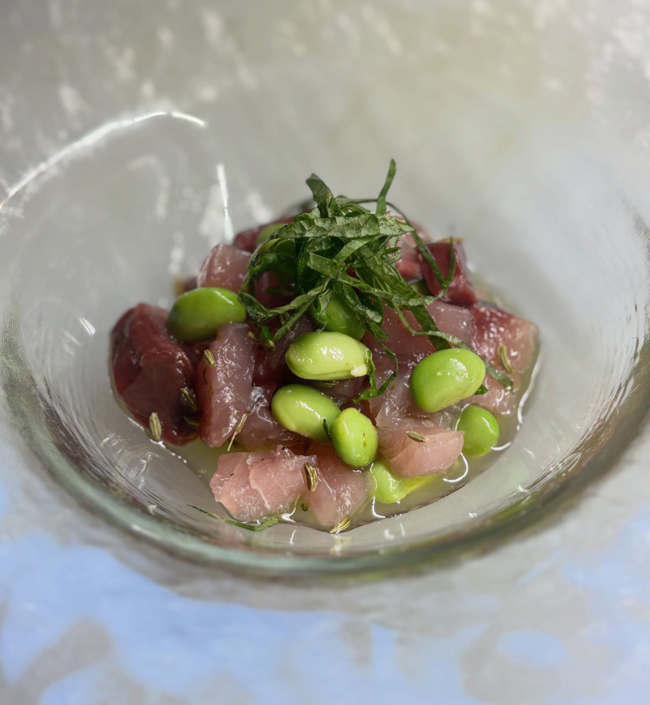
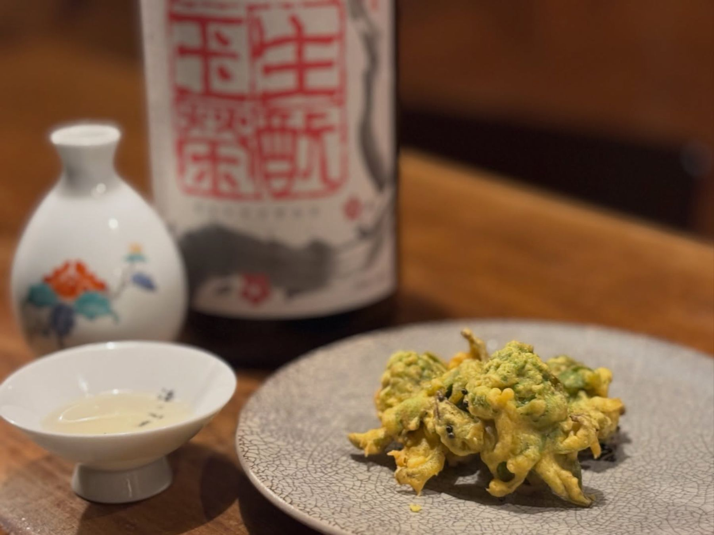

季節のスパイス料理
川越の野菜や旬の食材を、スパイスで仕立てた一皿。その日の仕入れで内容が変わります。
SPICE & SAKE — KAWAGOE
スパイス料理と、お燗酒。
川越の小さなカウンターで営む酒場です。
木・金 18:00–24:00／土・日 17:00–24:00｜火・水定休
ABOUT
川越の間借りカレー店「タベカレー」から始まったお店です。店主の田部さんが、川越の野菜や旬の食材を使ったスパイス料理と、日本酒・お燗酒のペアリングを楽しむ酒場として営んでいます。
店内にはアナログレコードの音楽。カウンター7席と半個室の、こぢんまりとした空間です。スパイス料理をつまみに一献かたむけ、〆はオーダーを受けてから炊くビリヤニで――そんな夜を過ごせるお店です。

燗をつけた酒が、スパイスを開かせる。
SHOP INFO
| 店名 | スパイスとお酒 食楽たべ（しょくらくたべ） |
|---|---|
| 住所 | 埼玉県川越市南通町16-5 ヨシダビル1F |
| アクセス | 川越駅から徒歩6分 |
| 営業時間 | 木・金 18:00–24:00（L.O.23:30） 土・日 17:00–24:00（L.O.23:30） ※不定期で昼飲み営業あり |
| 定休日 | 火・水 営業日は月ごとに変わります。最新の営業カレンダーはInstagramをご覧ください。 |
| お席 | カウンター7席＋半個室テーブル |
| お支払い | 現金・クレジットカード |
| 電話 | 050-8894-0569 |
CONTACT
ご予約はお電話、または公式LINE・Instagramのメッセージが便利です。カウンター中心の小さなお店ですので、事前のご連絡がおすすめです。